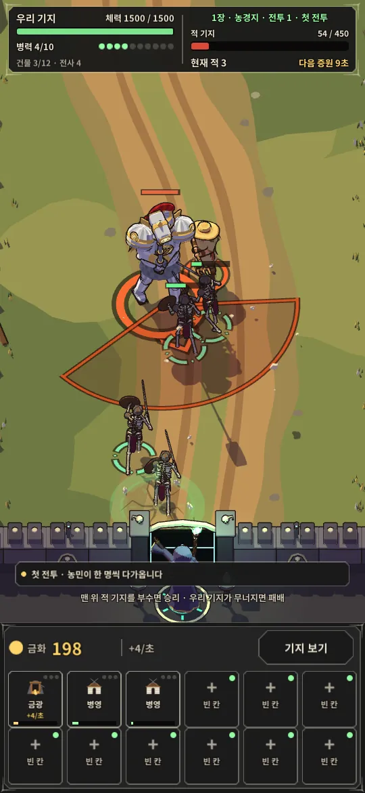

작품 데이터를 불러오지 못했습니다. 페이지를 새로고침해 주세요.
게임 포트폴리오
Unity와 Unreal로 만든 게임과 프로토타입 24편을 플레이 녹화·캡처와 제작 기록으로 소개합니다. 지금 재생되는 세 편이 최종 프로젝트입니다.



NECRO CLIMB
망자의 군단을 세워 인간의 성채를 오르는 세로형 강령술사 기지전.
v1.9 Windows 빌드 직접 플레이 · 기지 체력 30% 이하 수호자 강림 → 반격 · 14초 · 무음
최종 프로젝트
가장 최근에 만든 세 편입니다. 장면마다 무엇을 만들었는지, 어디까지 확인했는지 함께 적었습니다.
장면으로 만나는 게임
최종 프로젝트 이전에 만든 대표작 다섯 편의 영상입니다. 옆으로 넘기고, 미리보기로 그 자리에서 재생해 보세요.
모든 작품
완성작부터 소스만 남은 원형까지 24편. 어디까지 확인했는지를 작품마다 적었습니다.
검색·장르로 찾기제작 노트
무엇을 담았고, 화면의 출처와 상태를 어떻게 적었는지 밝혀 둡니다.
전체 작품
조건에 맞는 작품이 없습니다. 검색어를 바꾸거나 장르 선택을 풀어 보세요.